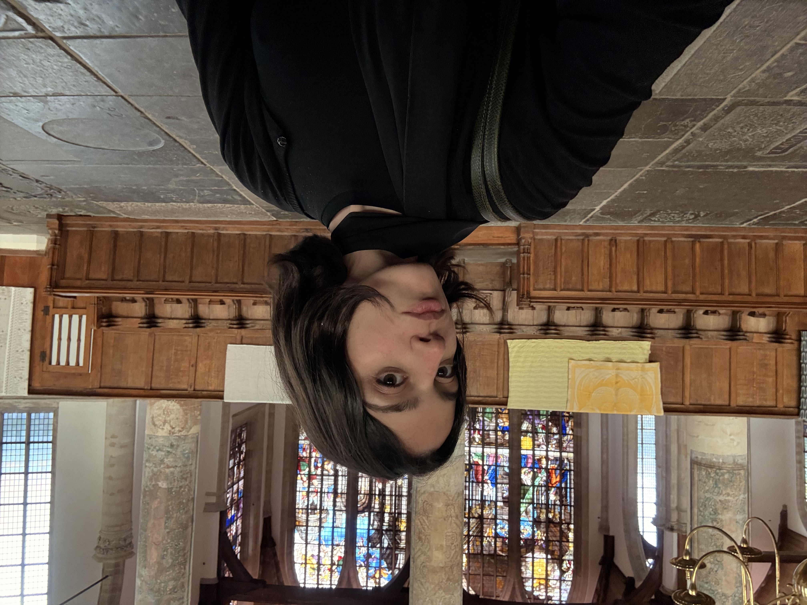
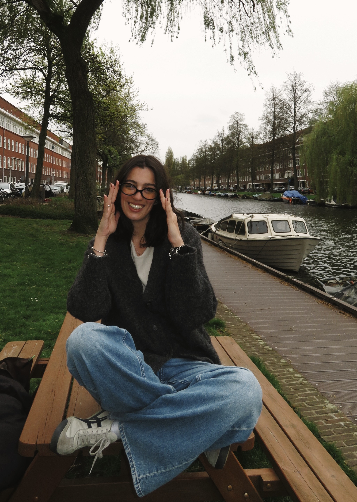
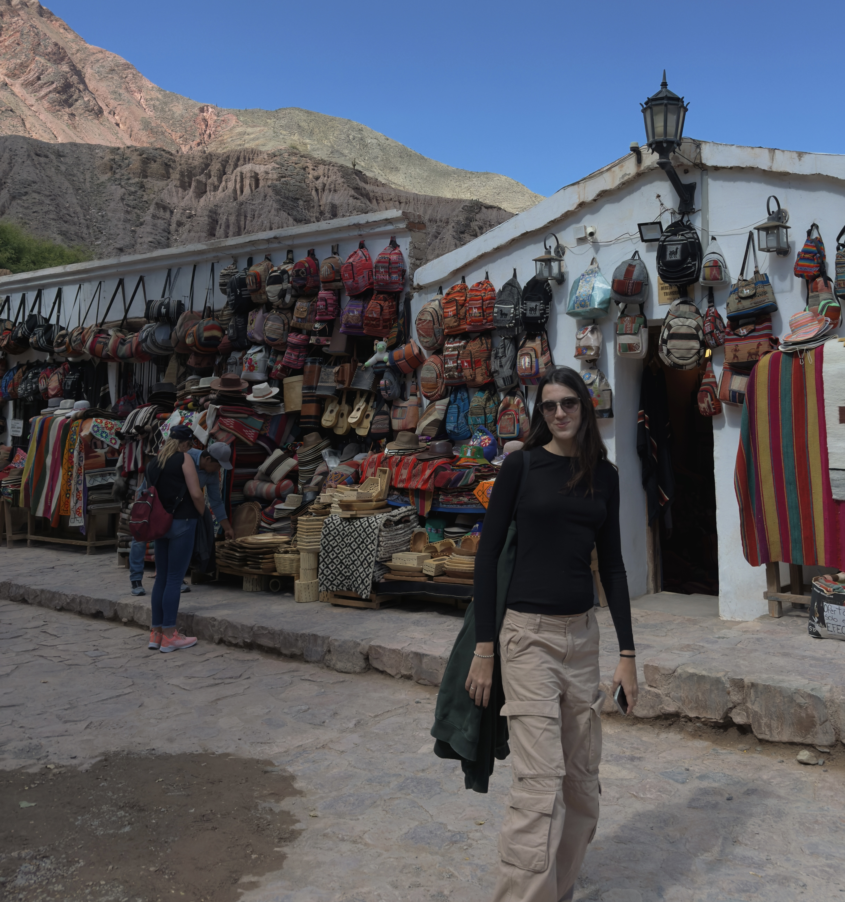

santina piazzese
spratte
Senior Experience Researcher & Behavioral Strategist6+ years translating human insight into product direction, service design, and organizational strategy — across enterprise, AI startups, B2C platforms, and consulting work.




I'm a behavioral scientist and senior experience researcher based in Amsterdam. I bring together mixed-methods research, behavioral economics, and service design thinking to translate complex human insight into product direction, organizational strategy, and tangible design outcomes.
My background is in cognitive and social psychology. I hold an MSc in Social Influence from the University of Amsterdam and a postgraduate MA in Cognitive Psychotherapy — which means my research isn't just methodologically rigorous, it's grounded in a deep understanding of how people actually think, decide, and change.
I've spent six years embedded in core product and strategy teams — building research practices from zero, delivering to enterprise clients, and consistently operating as a decision-making partner rather than a research service provider.
- SpanishNative
- EnglishC2 — IELTS 8.5/9
- ItalianC1 — Advanced
- DutchA2 — actively learning
Ok, impressive background —
but what can she actually solve?
Good question. Here's the honest answer. Each card below is a real problem I can walk into and own. Click the ones that sound like yours.
but I'm not quite sure